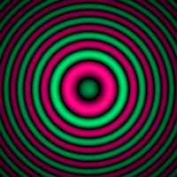
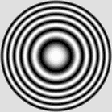
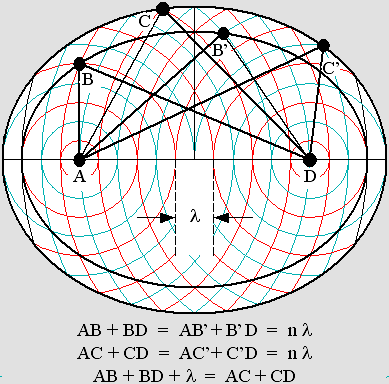
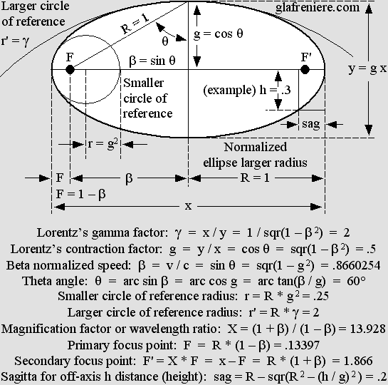

| 00 | 01 | 02 | 03 | 04 | 05 | 06 | 07 | 08 | 09 | 10 | 11| 12 | 13 | 14 | 15 | 16 | 17 | 18 | 19 | 20 | 21 | 22 | 23 | 24 | 25 | 26 | 27 | 28 | 29 | 30 | 31 | 32 | 33 | 34 |
FIELDS OF FORCE
The Coulomb field of force between two billiard balls make them decelerate or accelerate.
The mass gain as kinetic energy is transferred to the field from the ball on the left-hand side.
Then the field transmits the equivalent kinetic energy to the other ball, whose mass increases.
However, from the field's point of view, both balls are symmetrically bouncing on each other.
This calculus is based on Lorentz's mass gain: M = a + r according to active and reactive mass.
T is the total mass for both balls, so that the 3 – T delta mass must be temporarily allotted to the field.
|
Action and reaction between two billiard balls is essentially caused by electrostatic fields of force, which are responsible for the well-known Coulomb force. The repulsion effect is easily explainable by the fact that electrons only (rarely protons vs. electrons) come very close together when two pieces of matter collide. Electrons always create fields of force. Electrons are constantly radiating outgoing spherical waves all around. Thus, when two electrons come close together, waves meet between them and produce the very special ellipsoid standing wave pattern below.
The "biconvex" electrostatic field of force. The wave addition produces ellipsoidal standing waves. The amplitude is nil beyond electrons and it reaches a maximum exactly at the center.
 The orthogonal central pattern as seen from electrons. This structure is that of the diffractive lens.
On the one hand, the cross section structure is clearly that of the diffractive lens . On the other hand, all standing waves should be amplified the same way electrons are because of a lens effect (different from the diffractive lens effect below). This field of force is amplified as well and the resulting energy according to mc^2 must be considered as additional mass. Fields of force are true matter, especially gluonic fields, whose energy is much higher than the plain electron pair which is creating it. They are some sort of "canned" kinetic energy and they are responsible for nuclear energy. The diffractive lens.  Please observe that the cross section pattern is identical to that of the diffractive lens. Such a lens is possible because of the Huygens Principle. Each concentric obstacle stops or diffracts any wavefront whose energy is opposite in phase with respect to the focal point. Thus, all remaining Huygens' wavelets are roughly in phase on a binary basis. The main difference is its hyperbolic shape especially on both ends. Fields of force act like a diffractive lens because waves cannot travel freely through antinodes, where the aether density is variable. This is an undisputable principle: waves need a medium whose density must be constant in order to propagate with a constant velocity. They do travel freely through nodes, where density is constant, but they are weakly but surely scattered by each antinode. Thus, the addition for so many of them is finally decisive. Clearly, the amplified field of force should act more or less like an emitter whose structure is that of the diffractive lens. There is a converging effect. A significant part of the energy is focused towards both electrons. From another point of view, the field acts like a "diffractive mirror" capable of returning back all waves incoming from two electrons simultaneously. This explains radiation pressure and also action and reaction. The phase rotation. However, it is not that simple because the whole concentric node and antinode structure is moving away from the center. This produces a phase rotation, which is very regular everywhere because variable radii for concentric areas are compensated by variable velocity. Obviously, such a field alone cannot focalize energy because it is constantly rotated in phase in such a way that outgoing waves only are amplified. But it is not the case if the pattern is periodically stopped much the same way a stroboscope can apparently immobilize any rotating unit such as a wheel or a fan. The stroboscope effect. The electron acts like a perfect stroboscope because all its node and antinode structure oscillates simultaneously. The electron is a finite standing wave system, but its partially standing wave area nevertheless expands through billions of wavelengths. Its influence inside the field of force is determinant. So, when two electrons come rather close together, the wave addition clearly produces a stroboscopic effect on the field of force, at least in their respective area. Theoretically, three traveling wave trains are involved. If phases do not coincide, nodes and antinodes are weakened. They are rather strengthened when all three phases coincide. The important point is that this process is simultaneous. The electron spin does not matter either because nodes and antinodes appear simultaneously for both spins, while they appear with a pi / 2 phase offset for positrons whatever their spin. In all cases, this partially cancels the phase rotation inside the field of force. Finally, the amplification process produces Huygens wavelets which are mostly in phase with respect to electron or positron pairs, but the phase is opposite for an electron in the presence of a positron on a go and return trip. Then an attraction effect rather occurs as a result of stronger waves incoming from the opposite side. The electron synchronization. Additionally, in the presence of many electrons, the stroboscopic effect between each of them matches constantly because all electrons oscillate simultaneously. If the phase does not match exactly for a given electron, the whole oscillating structure will correct the anomaly. This synchronization phenomenon also influences the positron spin as long as it is not well secured inside a proton. It will slowly transform into an electron unless it previously reacts with the nearest electron and produce a quark. This occurs inside and around regular atomic structures because electrons are always nearer to each other. The nucleus may rather contain many positrons where the phase synchronization is compatible because the gluonic field conveniently produces a central area where the phase in quadrature allows it. The animated diagram below clearly shows this surprising phenomenon. The stroboscopic effect is also well visible. The diffractive lens structure is no longer regularly moving away from the center. It is rather moving by successive pulses separated by a pause. This happens because the electron partially standing waves (where outgoing waves are stronger) progressively transform into pure standing waves nearer to its center.
Two electrons very close together produce a quark with a very strong gluonic field. Three quarks placed crosswise on the three Cartesian axes produce a neutron. Surprisingly, the phase in the center conveniently matches the positron's. Thus, a positron can hide in the center and produce a proton. Also, please observe the stroboscope effect.
Matter in the whole universe contains as many positrons as electrons because most atomic structures maintain an equilibrium between them. As a matter of fact, positrons are not different from electrons except for phase, which is quadrature. Antimatter is just a relative point of view, especially because electrons or positrons are submitted to the Lorentz transformations. Obviously, their frequency should slow down when they are moving very fast. Thus fast moving matter with respect to an observer at rest is constantly transforming into antimatter, then into regular matter, and so on. Any moving electron is constantly transforming into a positron, then into an electron of opposite spin, and so on according to four pi / 2 phase steps. This is the cause of electric fields and magnetic fields involving the Lorentz force. As seen from any unmoving matter, electrons moving inside parallel feeders produce induction and self-induction as a result of the phase rotation. Similarly, electrons moving inside a coil constantly exhibit a phase rotation which explains the magnetic effects. When they are positrons, they cannot react with unmoving electrons in the coil, firstly because their phase changes rapidly, and secondly because their path inside any conductive atomic structure is free from electrons. Otherwise, moving electrons hitting matter certainly produce strong effects such a light emission and even X-Rays for faster speed. Thus many moving electrons behave like neutral particles inside unmoving conductive matter, but they still behave constantly like electrons with respect to each other. Because of this elasticity, they behave like a moving medium for high frequency electronic waves. This strongly suggests that their true speed inside a 300 Ohms TV feeder, for example, is certainly not 80% of the speed of light, which is the signal velocity. The electron true speed is rather slow, and they simply move to and fro in the case of standing waves. Billions of stacked hyperbolic diffractive lenses. Additionally, there are a lot of diffractive lenses stacked between both electrons, actually billions of them. So their additive effect should strongly focalize a lot of Huygens' wavelets. My most recent analysis of the global effect reveals that it should be a mix between the well-known Fresnel diffraction pattern and the Airy disk. It is quite uncertain because my program for this becomes much too slow if the goal is to analyze the whole emitting, then receiving 3-D space vs. a complete phase rotation. However, using shortcuts, the computer indicates that the axial alternating higher and lower amplitude zones, which are typical of both the Airy disk and the Fresnel diffraction pattern, should be still present. From another point of view, it is a well known fact that apodization erases all traces of such patterns. But it is unlikely to be possible here because the source energy should match the Gaussian normal distribution. Clearly, it is not the case here. The animated diagram below displays only the Fresnel diffraction pattern. Whatever the distance between two electrons, the effect should be constant because of a surprising phase shift which occurs between each higher amplitude zone.
The field of force acts like a diffractive lens. A lambda / 2 phase shift occurs between each high-energy zone. The result is a constant repulsion or attraction effect depending on the relative phase.
|
THE AMAZING PROPERTIES OF CONCENTRIC ELLIPSES
|
In order to work properly, the field of force must exhibit stunning properties. The goal is to justify radiation pressure, which is at the very basis of matter mechanics. The phase must obviously match for nodes and antinodes everywhere inside a huge 3-dimensional space. This suggests holography. The ellipsoid mirror is perfect for this. The diagram below especially shows that exchanges between two electrons via many theoretical concentric ellipsoid mirrors constantly match the wavelength because all distances are always integer multiples. All concentric (theoretical) mirrors have the same focal points A and D. Whatever their path, spherical waves emitted from A always reach D in accordance with the same phase. Actually, the node and antinode pattern is not a mirror but the amplification process produces a similar effect. Finally, all ellipsoid layers act like mirrors and spherical waves are perfectly focalized towards the opposite electron. |

|
The ellipse is also the basis of the Lorentz transformations. Because the field of force is already ellipsoid, the Lorentz transformations simply modify its structure while it moves into a different one whose properties do not change. As far as I know, I am the first one to point out that the Lorentz transformations are just how the Doppler effect transforms matter, and that the ellipse is totally founded on its basic magnitudes. The diagram below shows that Lorentz's contraction factor g and the theta angle as compared to the normalized beta velocity are related to the ellipse. Poincaré's "aberration" according to g squared, which he used in order to explain Relativity, is the radius (r) of the smaller circle of reference. The gamma factor is that of the larger one. |

|
The famous astronomer Karl Schwarzschild found a constant K in order to make accurate squashed or elongated ellipsoid, paraboloid and even hyperboloid Cassegrain telescope mirrors, whose primary focus point (f) is half of the r or r' radius. Schwarzschild's constant is 0 for a sphere and –1 for a parabola. It is higher than 0 (positive) for squashed (oblate) ellipses and lower than –1 for hyperbolas. Any value between 0 and –1 for K = –beta ^ 2 = g ^ 2 – 1 produces elongated (prolate) ellipses. Using Schwarzschild's formula, please note that r stands for the smaller circle of reference radius for parabolas and prolate ellipses. It rather stands for the larger circle of reference radius for oblate ellipses. However, it turns out that Schwarzschild's constant is interconnected with the r radius. It is redundant, but one may prefer to use it anyway in order to avoid the conversion to R while working on telescope mirrors. Otherwise, the simplified sagitta formula below for the ellipse rather uses a radius R = x / 2 which is that of the ellipse's larger radius (or that of its circumscribed circle). The sagitta according to Schwarzschild is given by: sag = h ^ 2 / (r * (1 + sqr(1 – (h ^ 2 / r ^ 2) * (K + 1)))) For the circle: sag = R – sqr(R ^ 2 – h ^ 2) ) For the parabola: sag = h ^ 2 / 2 r Simplified formula for the ellipse: sag = R – sqr(R 2 – (h / g) 2 ) = .2 It should be emphasized that there is no such thing as prolate or oblate ellipse. Those words are rather related to a specific portion of the ellipse, so that there is no true sagitta for the so-called oblate ellipse. The equivalent orthogonal sagitta is more exactly the prolongation of the h (height) distance and it is given by a calculus based on the ellipse's true sagitta (h' = R – sag). However, as compared to that of a circle (see formula above) it is contracted according to g: Pseudo-sagitta for the oblate ellipse: sag' = g * (R – sqr(R ^ 2 – (R – sag) ^ 2) ) = .2 To say it shortly, an ellipse is an ellipse. Period. Action and reaction. Fields of force are responsible for action and reaction because they can simultaneously focalize energy towards two electrons in two opposite directions. Fields of force are matter. They contain energy according to E = mc^2 and they are submitted to the Lorentz transformations. So the node and antinode structure (hence all ellipses) undergo a contraction according to g and the phase wave according to Lorentz's t' equation maintains a virtual simultaneity for action and reaction. And finally, the Doppler effect is not perceptible from the field point of view because shorter waves move slower than longer ones, which rather move faster with respect to the frame of reference. Thus, the radiation pressure on both electrons is constant whatever their relative velocity or direction. Amazingly, in spite of the Doppler effect, fields of force always act as if they were at rest. This principle is not really related to Relativity because there is only one frame of reference to consider, that of the field of force. It is rather one of the most important principles related to the New Mechanics, and it will allow us to easily upgrade Newton's laws. For example, Newton's third law "For every action there is an equal but opposite reaction" actually means that from the field's point of view, there is always opposite and equal action. It should rather be called the "Principle of Double Action" because the electrostatic field of force focuses energy equally towards both electrons whatever their true speed. Instead of a billiard ball hitting another one which is at rest, one can more easily consider that both balls are simply bouncing on each other like this:
There is no simpler way to mathematically obtain the correct results because, from an absolute point of view, action and reaction are not equal. Newton was wrong on this because he was not aware that kinetic energy is the consequence of Lorentz's mass gain. The diagram clearly shows that when both 1 kg balls (M = a + r and total mass T = 4) are temporarily stopped, the field of force contains m = 2 kg (delta = T – 2) of "canned" kinetic energy according to mc^2 which allows it to finally re-accelerate both of them in opposite direction at 86.6% of the speed of light. It should be emphasized that the total mass T for both balls and the field of force is constantly 4 kg. So the law of conservation of energy is still valid, but it is true only as seen from the field of force. After the collision, the ball on the right hand side may be considered at rest and its mass should be 1 Kg. But the other ball would seem to move away according to Poincaré's law of velocity addition: beta prime = (beta 1 + beta 2) / (1 + beta 1 * beta 2) Beta 1 and beta 2 are both sin 60° = 866, so beta prime is .9897 and gamma is exactly 7. This means that, from each ball point of view, the mass for the other ball moving away at 98.97% of the speed of light is 7 kg. So the total mass is 2 * 4 = 8 kg according to beta = .866 and gamma = 2 because the frame of reference velocity has been accelerated from 0 to .866. Clearly, the total mass and energy is dependent on the frame's velocity. On the one hand, action and reaction are equal only if the frame is at rest. So it is much preferable to presume that it is at rest... On the other hand, if one billiard ball is moving and the other one is at rest from the observer's point of view, the speed and mass for both of them must be firstly converted according to Poincaré's law of velocity addition. Then the calculus for the energy transfer becomes possible according to active and reactive mass. It is just a matter of active and reactive mass addition, which can be easily performed in a single operation if there is no significant deformation. For oblique collisions, active and reactive mass must be tempered according to the cosine of the angle (actually the Doppler effect). Finally, all results must be converted once again. I admit that this procedure seems to be the hard way, but it is likely to be unavoidable in order to obtain perfect results. |

|
Please be patient. This page will need a lot of additional updates because fields of force are complex. We are especially working on a new version of the Virtual Aether, which will be capable of a lens effect. So the electron amplification as well as the field of force mechanism will become verifiable. There is no doubt about this because the air itself is capable of a lens effect. I could check this using a spherical mirror, a Foucault apparatus and a stroboscope; then standing waves become well visible. No doubt that they should also become visible using ultrasonic imaging devices (ultrasonography). |
| 00 | 01 | 02 | 03 | 04 | 05 | 06 | 07 | 08 | 09 | 10 | 11| 12 | 13 | 14 | 15 | 16 | 17 | 18 | 19 | 20 | 21 | 22 | 23 | 24 | 25 | 26 | 27 | 28 | 29 | 30 | 31 | 32 | 33 | 34 |
|
Bois-des-Filion in Québec. Email Please read this notice. On the Internet since September 2002. Last update December 3, 2009. |